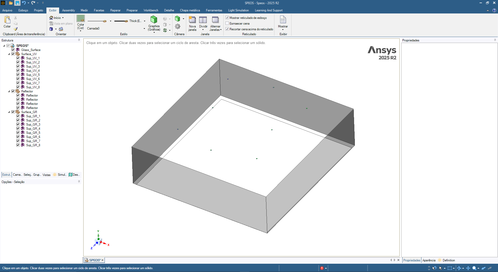
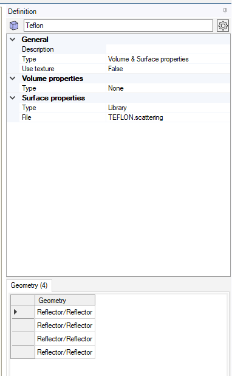
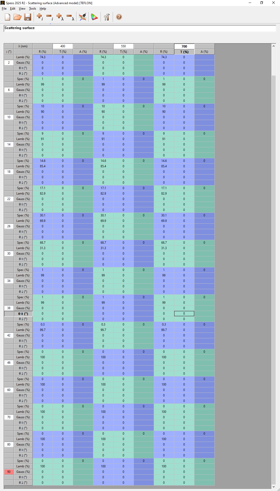
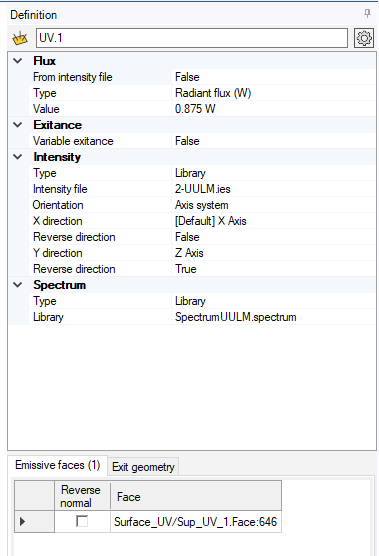
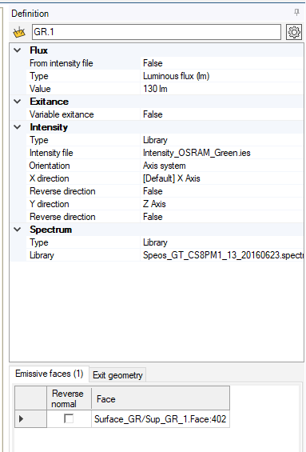
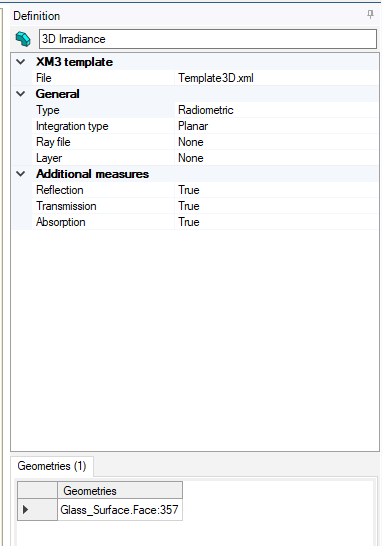
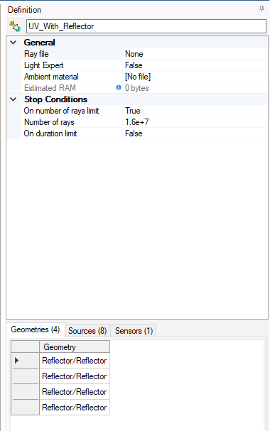
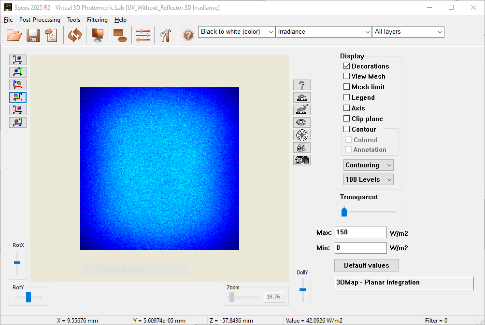

Ray Tracing Simulations
Overview
Ray tracing simulations were performed to assess the influence of optical reflectors and detailed light–matter interactions that are not captured by the geometric radiation field model. All simulations were conducted using the commercial non-sequential ray tracing software Ansys Speos 2025 R2.
Simulation Workflow
All ray tracing simulations followed an identical, fully reproducible workflow.
The three-dimensional geometry of the irradiation module—including LED emitting surfaces and reflector components where applicable — was created directly within the Speos CAD environment (see Figure 6).
A global Cartesian coordinate system was used as a reference frame for defining the geometry, positioning all optical components, and specifying source and sensor orientations. The surrounding domain was assumed to be homogeneous and filled with air, modeled as a non-absorbing and non-scattering medium with a refractive index of 1.0.
Geometry Definition
The emitting surfaces of the LEDs were defined as planar surfaces lying in the xz-plane. The primary optical axis of the system was aligned with the positive y-direction. The sensor plane was positioned parallel to the xz-plane at y = 0 and served as the reference plane for irradiance evaluation.
All relative positions and orientations of LEDs, reflectors, and the detection plane were explicitly defined within this coordinate system for each simulated configuration.
{kind=link}

Figure 6 Geometry definition of the irradiation module in Ansys Speos.
Material Definition
The surrounding environment was modeled as air with a refractive index of 1.0. Reflector surfaces were defined as purely reflective materials with mixed Lambertian–specular behavior that varies with the incident angle.
The angle-dependent reflection characteristics were implemented following the optical properties reported by Janecek and Moses [1] (see Figure 7 and Figure 8).
{kind=link}

Figure 7 Material definition of optical components in Ansys Speos.
{kind=link}

Figure 8 Angle-dependent Lambertian and specular scattering properties applied to the PTFE reflector material.
Surface Source Definition
Surface sources were created to represent both UV and green LEDs. For each LED type, the following parameters were specified:
- Emitting surface area
Green LED: diameter = 2.15 mm
UV LED: diameter = 2.6 mm
- Optical power emitted per LED
Green LED: 0.28 W
UV LED: 0.875 W
- Emission spectrum
Green LED: 530 nm peak wavelength with 30 nm full width
UV LED: 365 nm peak wavelength with 5 nm full width
Angular light intensity distribution provided by the manufacturer
Separate surface source definitions were used for the UV and green LEDs (see Figure 9 and Figure 10).
{kind=link}

Figure 9 Definition of the UV LED surface source in Ansys Speos.
{kind=link}

Figure 10 Definition of the green LED surface source in Ansys Speos.
Sensor Definition
Irradiance was quantified using a planar radiance sensor with dimensions 33 cm × 34 cm, positioned at several LED-to-sensor distances depending on the investigated configuration (see Figure 11).
The sensor surface was discretized using a triangular mesh with a mesh step of 1 mm, resulting in a total of 225,576 nodes, at which local irradiance values were computed. Irradiance integration was performed orthogonally to the sensor plane, accounting for the cosine dependence of irradiance on the angle of incidence.
{kind=link}

Figure 11 Radiance sensor definition and discretization settings in Ansys Speos.
Simulation Settings
Ray propagation from the LED sources to the sensor was simulated using a Direct Simulation approach (see Figure 12). Double precision was enabled for the ray tracer to improve numerical accuracy.
The maximum number of interactions per ray was set to 100, allowing individual rays to undergo multiple reflections and scattering events before termination. The stopping criterion for all simulations was defined as a total of 1.6 × 10⁷ rays, based on a ray number sensitivity analysis described in the Supporting Information.
{kind=link}

Figure 12 Direct simulation settings used for ray tracing in Ansys Speos.
Results Visualization
The resulting irradiance distributions were visualized directly within the Speos post-processing environment using the sensor output (see Figure 13). Spatial irradiance maps served as the basis for calculating mean irradiance and homogeneity metrics and for comparison with geometric modelling and experimental radiometry.
{kind=link}

Figure 13 Visualization of irradiance distributions on the sensor plane in Ansys Speos.